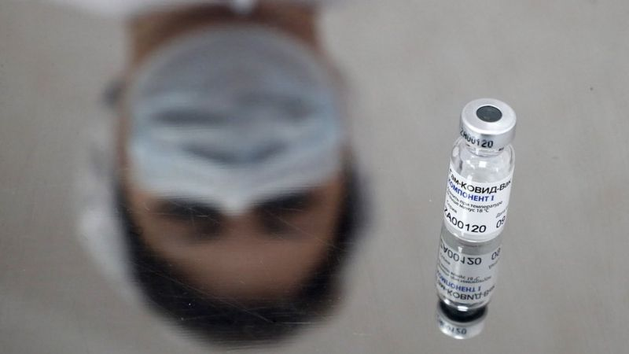

15. april 2021
Godinu dana posle isplate 100 evra iz državnog budžeta, počela je prijava za dodatnih 60 evra za sve punoletne ljude u Srbiji – u dve jednake rate u maju i novembru. Procedura je jednostavna i kratko traje, a popunjava se preko sajta Uprave za trezor. Potrebno je uneti tri podatka – broj lične karte, jedinstveni matični broj građana i banku u kojoj imate račun ili gde želite da vam država otvori račun, ako ga nemate.Prijava traje do 15. maja, a za one koji ne barataju internetom, od 5. maja postojaće i kol centar kako bi ljudi mogli telefonom da se prijave, najavili su zvaničnici.
